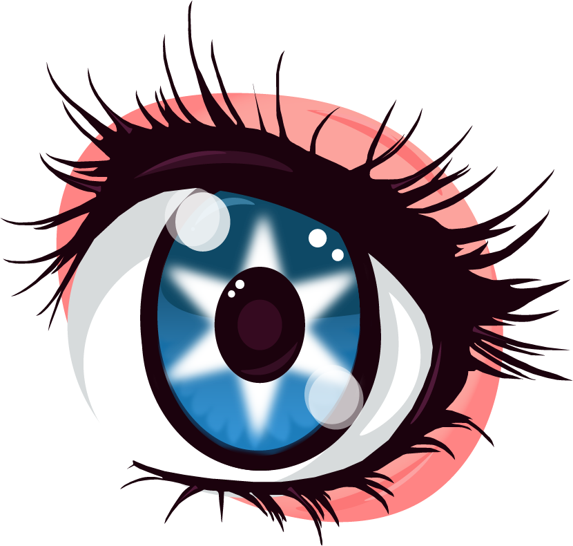

Illustrator Eye
To create this illustration, I began by researching reference images of eyelashes to find a style that I liked. Once I found a design that stood out to me, I used Adobe Illustrator’s Pen Tool to carefully trace and recreate the eyelashes. While following the reference closely, I also made small adjustments and added my own stylistic touches so the final design would feel original rather than copied. Navigating the tools were difficult at first but then I began to get used to them and I was able to create the design I had envisioned. Along with the pen tool, I also used the smooth tool to makesure the lines were clean and polished, which helped give the eyelashes a more refined and professional look.
For the eye itself, I drew inspiration from anime-style eyes, which are known for their detailed highlights, strong shapes, and expressive appearance. I incorporated layered colors, reflections, and light effects to give the eye more depth and visual interest. Anime eyes often include multiple highlights and gradients, which helped make the eye look more dynamic and visually engaging.
By combining the eyelash reference with the stylized detail of anime eyes, I was able to create an illustration that balances precision, detail, and artistic style.

{kind=link}